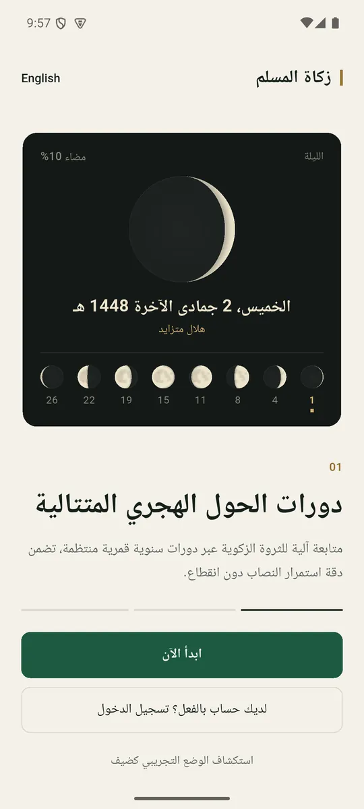
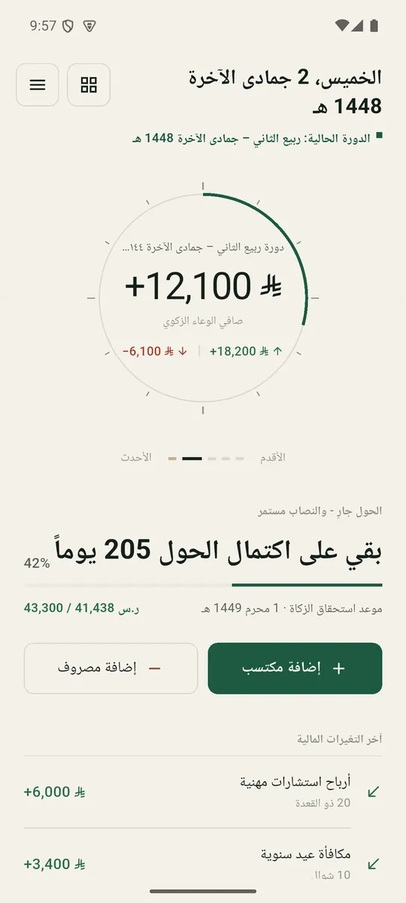
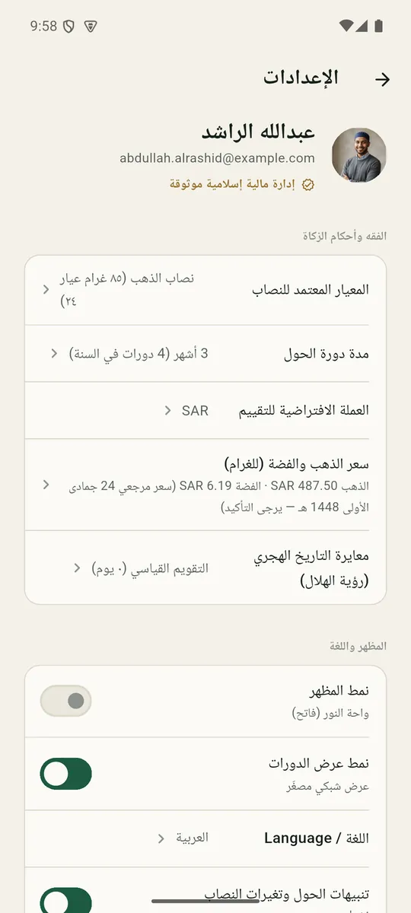
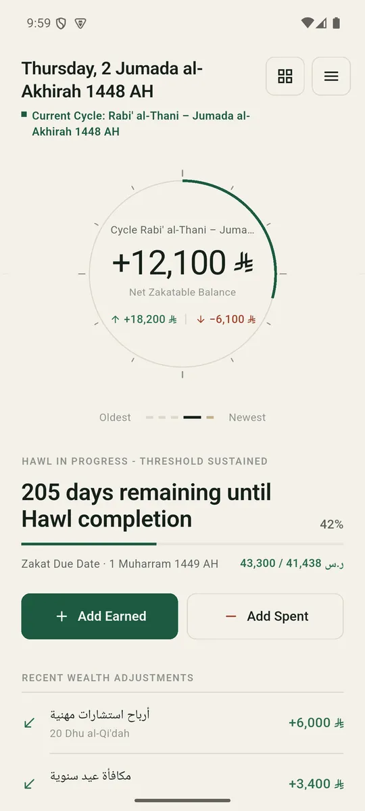

Hijri first
Every date is a Hijri date
Cycle boundaries, due dates and labels are computed in the Umm al-Qura calendar, with a setting to shift by a day to match local moon sighting. Onboarding opens on tonight’s actual moon.
Zakat is only due on wealth that stays above the nisab for a full lunar year. Most apps are a calculator with a 2.5% button. This one models the year itself.

Hijri first
Cycle boundaries, due dates and labels are computed in the Umm al-Qura calendar, with a setting to shift by a day to match local moon sighting. Onboarding opens on tonight’s actual moon.

The hawl engine
Income arrives all year, so the year is split into cycles of 2, 3, 4 or 6 Hijri months. Cycles lock when they end; when the oldest is a full lunar year old, the window is checked against the nisab.

Nothing lost
If the window falls short, one tap pours the oldest cycle into the next one. Every rollover and payment writes an audit entry, and paid money is never charged twice. Changing the cycle length re-splits history without losing a balance.

Ledger design system
About 540 strings per language, full right-to-left layout, Amiri and IBM Plex Sans Arabic, tabular figures for money. The dial, the 12-tick gauge and the moon are drawn with CustomPainter.
Try it · the same moon math, in your browser